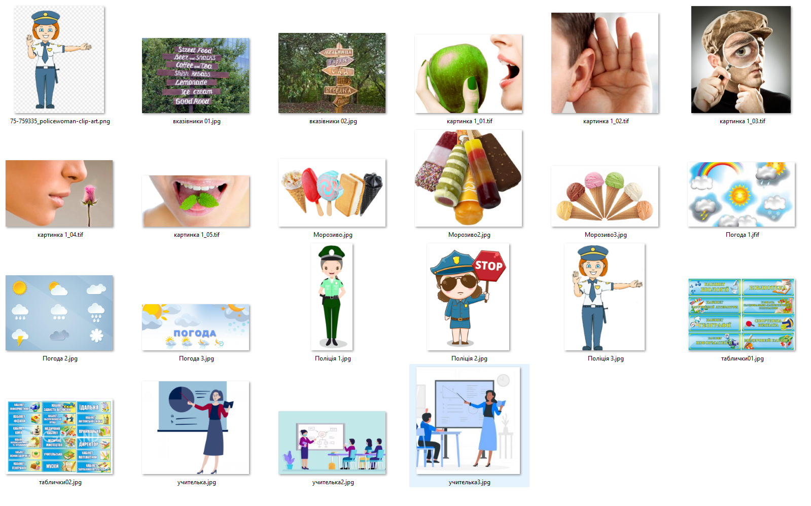

HUB 56 · 5 клас · Урок №3
Повідомлення та інформація
Отримання повідомлень людиною. Органи чуття.
Повідомлення навколо нас
Життя людини неможливе без спілкування, а спілкування здійснюється через повідомлення. Повідомлення містять відомості про різноманітні предмети, процеси та явища.
Повідомленнями є:
- зображення пішохідного переходу на дорозі;
- сигнал автомобіля швидкої допомоги, який поспішає до хворого;
- спів півня, який сповіщає, що настав ранок;
- SMS-повідомлення від подруги або друга з вітанням із днем народження;
- карта автомобільних шляхів вашого регіону;
- вказівник розміщення каси продажу квитків на залізничному вокзалі.
Як людина отримує повідомлення
Людина отримує повідомлення з навколишнього світу, використовуючи свої органи чуття. Основні з них: слух, зір, смак, нюх, дотик.
Залежно від того, які органи чуття людини сприймають повідомлення, їх можна розподілити на:
- візуальні — сприймаються зором;
- звукові — сприймаються слухом;
- смакові — сприймаються органами смаку;
- нюхові — сприймаються органами нюху;
- тактильні — сприймаються органами дотику.
Комбіновані повідомлення
Доволі часто в отриманні повідомлень беруть участь одразу кілька органів чуття людини. Такі повідомлення називають комбінованими.
Наприклад, якщо ми їмо яблуко, то відразу отримуємо повідомлення про його колір і форму — візуальне; тверде воно чи м’яке — тактильне; солодке чи кисле — смакове; який має аромат — повідомлення про запах. Також можемо прослухати розповідь садівника про його сорт і способи догляду — звукове повідомлення.

Азбука Брайля та інші органи чуття
У 1829 році французький педагог Луї Брайль (1809–1852) запропонував азбуку для людей з порушенням зору. Азбука Брайля — це азбука, у якій кожна літера зображується випуклими точками.
Людина має більше органів чуття, ніж ті, про які ми вже говорили. Крім перелічених, це:
- органи, що відчувають зміну положення тіла людини у просторі — вестибулярний апарат;
- органи, що відчувають зміну температури зовні та всередині тіла;
- органи, що реагують на зміну положення окремих частин тіла та їх рух;
- органи відчуття болю.
Що таке інформація
Отримавши через органи чуття повідомлення, людина осмислює їх. Результатом осмислення повідомлення є інформація.
Інформація — це результат сприйняття й опрацювання людиною повідомлень з навколишнього світу.
Проте, отримавши однакові повідомлення, люди не завжди роблять однакові висновки. На те, яку інформацію отримає конкретна людина, впливають:
- особливості органів чуття — частина повідомлень може не сприйнятися або спотворюватися;
- рівень знань або досвіду людини з теми чи форми подання повідомлень;
- особливості мислення.